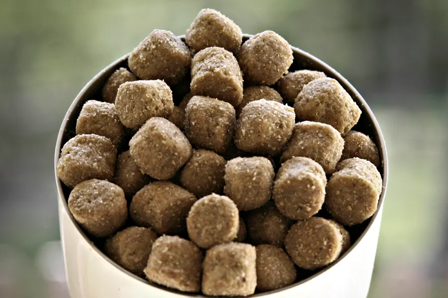

How much to feed a dog: calorie calculator and chart
A healthy neutered adult dog needs roughly 70 × (its weight in kg)0.75 × 1.4 to 1.6 kcal a day, the method used in the 2021 AAHA veterinary guidelines. That works out at about 551 to 630 kcal a day for a 10 kg (22 lb) dog. Enter your dog's weight below, add the calories from the food label to convert the result into cups or grams, then fine tune by watching weight and body condition.

Dog calorie and feeding calculator
Method: resting energy requirement (RER) = 70 × (body weight in kg)0.75, multiplied by the canine life stage factor from the 2021 AAHA guidelines. Results are a starting point, not a prescription: individual dogs can need about 30 percent more or less.
How the calculation works
Vets estimate a dog's daily calories in two steps. The Merck Veterinary Manual and the 2021 AAHA Nutrition and Weight Management Guidelines both start from the resting energy requirement (RER), the energy a healthy dog uses at rest in a comfortable temperature:
RER (kcal per day) = 70 × (body weight in kg)0.75
Merck notes that this exponential formula works for dogs of any size. A simpler straight line version, 30 × weight in kg + 70, is only meant for dogs heavier than 2 kg and lighter than 45 kg, because energy needs do not rise in a straight line with body weight.
The second step multiplies RER by a life stage factor to get the maintenance energy requirement (MER), the calories a dog needs each day to hold its weight with normal activity. AAHA's own worked example is a 10 lb (4.5 kg) neutered dog: RER is about 216 kcal, and 216 × 1.4 gives 302 kcal a day.
A kilocalorie (kcal) is the same unit as the capital C "Calorie" printed on food labels, as both the Merck Veterinary Manual and the National Research Council explain.
Life stage factors: AAHA and Merck compared
The two references use slightly different multipliers. AAHA gives a range for each group; Merck gives a single number. Both call the result a starting point.
| Dog | AAHA 2021 factor (× RER) | Merck Veterinary Manual factor (× RER) |
|---|---|---|
| Neutered adult | 1.4 to 1.6 | 1.6 |
| Intact adult | 1.6 to 1.8 | 1.8 |
| Inactive or obesity prone | 1.0 to 1.2 | 1.4 |
| Weight loss | 1.0 | not listed |
| Puppy under 4 months | 3.0 | 3 |
| Puppy 4 months or older | 2.0 | 2 |
| Pregnant (last 21 days) | 3.0 | not listed |
| Nursing mother | 3.0 to 6.0 or more, depending on litter size and week | not listed |
| Working dog | light 1.6 to 2.0, moderate 2.0 to 5.0, heavy 5.0 to 11.0 | not listed |
AAHA adds that sedentary and indoor pets may need less than these factors suggest. Merck makes a similar point: dogs living in households often need fewer calories a day than dogs kept in kennels, and breed matters too (Newfoundlands appear to need fewer calories than Great Danes). Pregnant, nursing and hard working dogs vary so much that their feeding plan should come from your vet, which is why the calculator above leaves them out.
How much to feed a dog by weight: calorie chart
Daily calories worked out with the RER formula and the AAHA adult factors, rounded to the nearest whole kcal. Use the weight your dog should be, not just the weight it is, if it is carrying extra fat.
| Weight | RER (kcal per day) | Neutered adult (1.4 to 1.6) | Intact adult (1.6 to 1.8) | Inactive (1.0 to 1.2) |
|---|---|---|---|---|
| 5 lb (2.3 kg) | 129 | 181 to 207 | 207 to 233 | 129 to 155 |
| 10 lb (4.5 kg) | 218 | 305 to 348 | 348 to 392 | 218 to 261 |
| 15 lb (6.8 kg) | 295 | 413 to 472 | 472 to 531 | 295 to 354 |
| 20 lb (9.1 kg) | 366 | 512 to 585 | 585 to 659 | 366 to 439 |
| 30 lb (13.6 kg) | 496 | 694 to 794 | 794 to 893 | 496 to 595 |
| 40 lb (18.1 kg) | 615 | 862 to 985 | 985 to 1108 | 615 to 738 |
| 50 lb (22.7 kg) | 727 | 1018 to 1164 | 1164 to 1309 | 727 to 873 |
| 60 lb (27.2 kg) | 834 | 1168 to 1335 | 1335 to 1501 | 834 to 1001 |
| 70 lb (31.8 kg) | 936 | 1311 to 1498 | 1498 to 1685 | 936 to 1124 |
| 80 lb (36.3 kg) | 1035 | 1449 to 1656 | 1656 to 1863 | 1035 to 1242 |
| 90 lb (40.8 kg) | 1131 | 1583 to 1809 | 1809 to 2035 | 1131 to 1357 |
| 100 lb (45.4 kg) | 1223 | 1713 to 1958 | 1958 to 2202 | 1223 to 1468 |
Dog feeding chart in kg
| Weight | RER (kcal per day) | Neutered adult | Intact adult | Inactive |
|---|---|---|---|---|
| 2 kg | 118 | 165 to 188 | 188 to 212 | 118 to 141 |
| 5 kg | 234 | 328 to 374 | 374 to 421 | 234 to 281 |
| 8 kg | 333 | 466 to 533 | 533 to 599 | 333 to 400 |
| 10 kg | 394 | 551 to 630 | 630 to 709 | 394 to 472 |
| 15 kg | 534 | 747 to 854 | 854 to 960 | 534 to 640 |
| 20 kg | 662 | 927 to 1059 | 1059 to 1192 | 662 to 794 |
| 25 kg | 783 | 1096 to 1252 | 1252 to 1409 | 783 to 939 |
| 30 kg | 897 | 1256 to 1436 | 1436 to 1615 | 897 to 1077 |
| 35 kg | 1007 | 1410 to 1612 | 1612 to 1813 | 1007 to 1209 |
| 40 kg | 1113 | 1559 to 1781 | 1781 to 2004 | 1113 to 1336 |
| 50 kg | 1316 | 1843 to 2106 | 2106 to 2369 | 1316 to 1579 |
A cross check with the National Research Council table
The National Research Council (NRC) wrote the reference text Nutrient Requirements of Dogs and Cats (2006), and its free owner booklet Your Dog's Nutritional Needs gives average daily energy needs for adult dogs:
| Type of dog | 10 lb | 30 lb | 50 lb | 70 lb | 90 lb |
|---|---|---|---|---|---|
| Inactive dogs | 296 | 674 | 989 | 1,272 | 1,540 |
| Adult active dogs | 404 | 922 | 1,353 | 1,740 | 2,100 |
| Young adult active dogs | 436 | 993 | 1,451 | 1,876 | 2,264 |
| Older active dogs | 327 | 745 | 1,093 | 1,407 | 1,700 |
Figures in kcal per day, from the NRC booklet (2006).
We checked these numbers against the same weight to the power 0.75 scaling. Every figure in the inactive row is within 0.5 percent of 95 × kg0.75, and every figure in the active row is within 0.5 percent of 130 × kg0.75. In RER terms, that is about 1.36 × RER for inactive dogs and 1.86 × RER for active ones. So the NRC averages sit at the generous end: its inactive row is close to AAHA's neutered adult range rather than AAHA's 1.0 to 1.2 for inactive dogs, and its active row is just above the intact adult range. The experts agree on the method but not on one exact number, which is why every source says to treat the result as a starting point and adjust by body condition. The booklet describes active dogs as those with strong stimulus and ample chance to exercise, such as dogs in multi dog households, in the country or with a large yard.
Turning calories into cups or grams
Calories only become useful once you know how much energy is in your dog's food. AAHA notes that AAFCO, the body behind US pet food rules, requires calorie content on dog food and treat labels (chews and bones are not included). If the packaging is not available, AAHA suggests the company's website or customer service line.
- Find the daily calories from the calculator or chart.
- Find the food's calories per cup, can or kilogram on the label.
- Divide. For example, if a dog needs 550 kcal and a food provides 350 kcal per cup, that is 550 ÷ 350 = about 1.6 cups a day. If the label gives 3,500 kcal per kg, the same dog needs 550 ÷ 3,500 × 1,000 = about 157 g a day. (These label values are made up for the example; use your own food's numbers.)
- Split the total into meals. The NRC booklet says it is fine to feed an adult dog once or twice a day, while puppies need two to three meals a day.
A kitchen scale is more accurate than a scoop, because cups of kibble vary. AAHA points out that pet food feeding guides are not standardized, so the amount on the bag is also only a starting point. Merck adds that if a dog needs much less food than the label suggests (10 to 30 percent less) to stay at an ideal weight, a less energy dense food may suit it better, because feeding a small amount of a standard food also cuts every other nutrient.
Treats: the 10 percent rule
The AAHA guidelines say a complete and balanced food should supply at least 90 percent of a dog's calories, with treats, chews and other foods making up no more than 10 percent. The WSAVA nutritional assessment guidelines list snacks, treats and table food above 10 percent of total calories as a nutritional risk factor. The calculator shows this treat budget for you; if you use it, cut the main food by the same amount. For low calorie treat ideas, check our Can dogs eat this? table.
Check and adjust: why the number is only a start
Dogs of the same weight can need very different amounts. Merck says any given dog may need as much as 30 percent more or fewer calories than another dog of the same weight, and the WSAVA guidelines give the same 30 percent figure in either direction for dogs. So:
- Weigh your dog regularly on the same scale, and score its body condition. On the 9 point scale used by WSAVA, 4 to 5 is ideal; any score below 4 or above 5 is flagged as a risk factor. Our body condition score guide shows how to do it with your hands and eyes.
- Adjust gradually. If your dog is gaining, feed a little less; if it is losing weight it should not, feed a little more, and ask your vet if the change is unexplained.
- Change foods slowly. AAHA suggests moving to a new diet over 4 to 7 days, and WSAVA notes some dogs have fewer stomach upsets when food is changed over 7 to 10 days.
- Ask about unusually low needs. Merck advises checking for medical causes such as an underactive thyroid (hypothyroidism) when a dog needs surprisingly few calories to stay at its ideal weight.
Keeping dogs lean pays off. In a 14 year study of 48 Labrador retrievers, dogs fed 25 percent less than their littermates lived a median of 13 years compared with 11.2 years (see healthy weight and weight and health).
When not to rely on a calculator
This page is general information for healthy dogs, not veterinary advice. Ask your vet for a feeding plan if your dog is pregnant or nursing, a puppy of a large or giant breed, a working or sport dog, underweight or overweight, on a prescription or homemade diet, or has any medical condition such as kidney, liver, heart or digestive disease, diabetes or a thyroid problem. Sudden changes in appetite, thirst or weight are a reason to see your vet.
Frequently asked questions
How much should I feed my dog a day?
Work out its daily calories, then divide by the calories in its food. For a healthy neutered adult, vets start from 70 × (weight in kg)0.75 and multiply by 1.4 to 1.6 (AAHA 2021). A 10 kg neutered dog needs roughly 551 to 630 kcal a day, adjusted up or down by how its weight and body condition change.
How many calories does a dog need per day by weight?
Using the RER formula and AAHA factors, a neutered adult needs about 328 to 374 kcal at 5 kg, 551 to 630 kcal at 10 kg, 927 to 1059 kcal at 20 kg and 1256 to 1436 kcal at 30 kg. Individual dogs can vary by about 30 percent either way.
What is RER for dogs?
RER is the resting energy requirement, the calories a healthy dog uses at rest in a comfortable temperature. The Merck Veterinary Manual gives it as 70 × (body weight in kg)0.75, a formula that works for dogs of any size.
How many treats can I give my dog?
Keep treats, chews and table food to 10 percent or less of daily calories, as the AAHA guidelines advise, and reduce the main food to match. WSAVA treats more than 10 percent from snacks as a nutritional risk factor.
Should I follow the feeding guide on the dog food bag?
Use it as a starting point. AAHA notes feeding guides on pet food are not standardized, so check your dog's weight and body condition score every few weeks and adjust the amount.
How many times a day should I feed my dog?
The National Research Council says once or twice a day is fine for adult dogs, while puppies need two to three meals a day.
Sources
- 2021 AAHA Nutrition and Weight Management Guidelines for Dogs and Cats, Box 1: Energy Requirement Calculations (PDF), American Animal Hospital Association
- Feeding Plans for Healthy, Appropriate Weight Cats and Dogs (2021 AAHA Nutrition and Weight Management Guidelines), American Animal Hospital Association
- Cline MG, Burns KM, Coe JB, Downing R, Durzi T, Murphy M, Parker V (2021). 2021 AAHA Nutrition and Weight Management Guidelines for Dogs and Cats. Journal of the American Animal Hospital Association 57(4): 153-178. DOI 10.5326/JAAHA-MS-7232, JAAHA
- Sanderson SL. Nutritional Requirements of Small Animals (full review Nov 2023, updated Sept 2024), Merck Veterinary Manual
- WSAVA Nutritional Assessment Guidelines Task Force: Freeman L, Becvarova I, Cave N, et al. (2011). WSAVA Nutritional Assessment Guidelines. Journal of Small Animal Practice 52(7): 385-396. DOI 10.1111/j.1748-5827.2011.01079.x, World Small Animal Veterinary Association
- Your Dog's Nutritional Needs: A Science Based Guide for Pet Owners (2006), based on Nutrient Requirements of Dogs and Cats, National Research Council, The National Academies
- Body Condition Score: Dog (chart), World Small Animal Veterinary Association
- Study finds dogs fed a reduced calorie diet live nearly two years longer (Kealy et al., 2002), Penn Today, University of Pennsylvania
General education only, not veterinary advice. If you are worried about your dog, contact your vet; in an emergency, contact an emergency vet straight away.